Tutorial
Experienced Julia users and programmers fluent in other languages and graphics systems should have no problem using Luxor by referring to the rest of the documentation. For others, here is a short tutorial to help you get started.
What you need
If you've already downloaded Julia, and have added the Luxor package successfully (like this):
Pkg.add("Luxor")then you're ready to start.
Presumably you'll be working in a Jupyter notebook, or perhaps using the Juno development environment. It's also possible to work in a text editor (you'll need to know how to run a file of Julia code), or, at a pinch, you could use the Julia REPL directly.
Ready? Let's begin. The goal of this tutorial is to do a bit of basic 'compass and ruler' Euclidean geometry, to introduce the basic concepts of Luxor drawings.
First steps
Have you started a Julia session? Excellent. We'll have to load just one package for this tutorial:
using LuxorHere's an easy shortcut for making drawings in Luxor. It's a Julia macro, and it's a good way to test that your system's working. Evaluate this code:
@png begin
text("Hello world")
circle(Point(0, 0), 200, :stroke)
endWhat happened? Can you see this image somewhere?
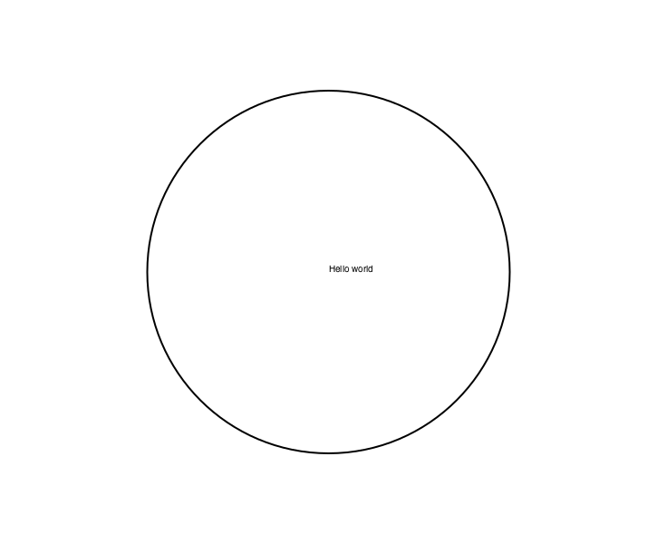
If you're using Juno, the image should appear in the Plots window. If you're working in a Jupyter notebook, the image should appear below the code. If you're in a terminal or text editor, the image should have opened up in some other application, or, at the very least, it should have been saved in your current working directory (as "luxor-drawing.png"). If nothing happened, or if something bad happened, we've got some set-up or installation issues probably unrelated to Luxor...
Let's press on. The @png macro is an easy way to make a drawing; all it does is save a bit of typing. (The macro expands to enclose your drawing commands with calls to the Document(), origin(), finish(), and preview() functions.) There are also @svg and @pdf macros, which do a similar thing. PNGs and SVGs are good because they show up in Juno and Jupyter. PDF documents are often higher quality, and usually open up in a separate application.
This example illustrates a few things about Luxor drawings:
There are default values which you don't have to set if you don't want to (file names, colors, font sizes, etc).
Positions on the drawing are specified with coordinates stored in the Point datatype, and you can sometimes omit positions altogether.
The text was placed at the origin point (0,0), and by default it's left aligned.
The circle wasn't filled, but "stroked". We passed the
:strokesymbol as an action to thecircle()function. Many drawing functions expect some action, such as:fillor:stroke, and sometimes:clipor:fillstroke.Did the first drawing takes a few seconds to appear? The Cairo drawing engine has to warm up. Once it's running, it's much faster.
Once more, with more black:
@png begin
text("Hello again, world!", Point(0, 250))
circle(Point(0, 0), 200, :fill)
end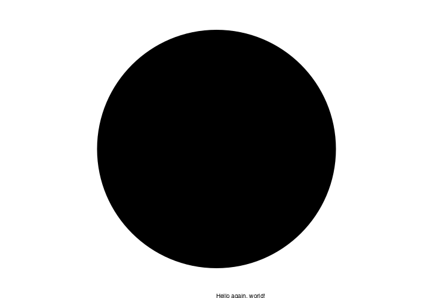
Euclidean eggs
For the main section of this tutorial, we'll attempt to draw Euclid's egg, which involves a bit of geometry.
For now, you can continue to store all the drawing instructions between the @png macro's begin and end markers. Technically, however, working like this at the top-level in Julia (ie without storing instructions in functions) isn't considered to be "best practice".
To start off, define the variable radius to hold a value of 100 units (there are 72 units in a traditional inch). Select dotted lines, and a gray value (40% gray). Next, make two points, A and B, which will lie either side of the origin point. The square brackets are an array comprehension. x takes two values, and a Point using each value is created and stored in an array. It seems hardly worth doing for two points! But it shows how you can assign two variables at the same time, and how you would generate more than two points...
Draw a line from A to B, and "stroke" it. Draw a stroked circle too. Here, the letter "O" is a short cut for Origin, ie the Point(0, 0).
@png begin
radius=80
setdash("dot")
sethue("gray40")
A, B = [Point(x, 0) for x in [-radius, radius]]
line(A, B, :stroke)
circle(O, radius, :stroke)
end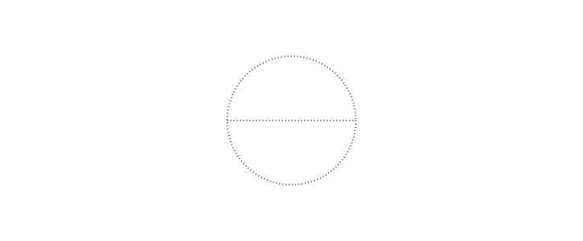
Labels and dots
It's a good idea to label points in geometrical constructions, and to draw small dots to indicate their location clearly. For the latter task, small filled circles will do. For labels, there's a special label() function we can use, which positions a text string close to a point, using points of the compass, so :N places the label to the north of a position.
@png begin
radius=80
setdash("dot")
sethue("gray40")
A, B = [Point(x, 0) for x in [-radius, radius]]
line(A, B, :stroke)
circle(O, radius, :stroke)
label("A", :NW, A)
label("O", :N, O)
label("B", :NE, B)
circle.([A, O, B], 2, :fill)
circle.([A, B], 2radius, :stroke)
end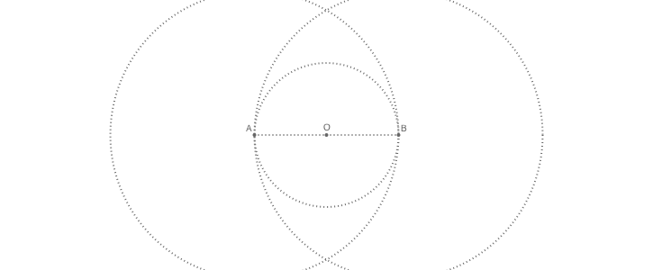
While we could have drawn all the circles as usual, we've taken the opportunity to introduce a powerful Julia feature called "broadcasting". The dot (".") just after the function name in the last two circle() function calls tells Julia to apply the function to all the arguments. We supplied an array of three points, and filled circles were placed at each one. Then we supplied an array of two points and stroked circles were placed there. Notice that we didn't have to supply an array of radiuses or an array of actions — in each case Julia did the necessary broadcasting for us.
Intersect this
We've now ready to tackle the job of finding the coordinates of the two points where two circles intersect. There isn't currently a Luxor function to do this (please submit your pull requests!), but there's an easy alternative: find the point where each circle cuts a vertical line drawn through O.
The intersection_line_circle() function does just this. It takes four arguments: two points and a point/radius combination, and it returns a Boolean success/failure flag followed by the two points. Then we'll test (if nints == 2) that there are two intersection points, then draw and label them using our new broadcasting superpowers.
@png begin
radius=80
setdash("dot")
sethue("gray40")
A, B = [Point(x, 0) for x in [-radius, radius]]
line(A, B, :stroke)
circle(O, radius, :stroke)
label("A", :NW, A)
label("O", :N, O)
label("B", :NE, B)
circle.([A, O, B], 2, :fill)
circle.([A, B], 2radius, :stroke)
nints, C, D =
intersection_line_circle(Point(0, -2radius), Point(0, 2radius), A, 2radius)
if nints == 2
circle.([C, D], 2, :fill)
label.(["D", "C"], :N, [D, C])
end
end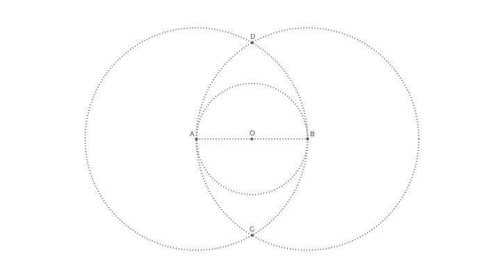
The line is specified with two points with an x value of 0 and y values of ± twice the radius, written in Julia's math-friendly style. The circle is centered at A and has a radius of AB. Assuming that there are two intersections, we feed these to circle() and label().
The upper circle
Now for the trickiest part of this construction: a small circle whose center point sits on top of the OAB circle and that meets the two larger circles.
Finding this new center point C1 is easy enough, because we can again use intersection_line_circle() to find the point where the OAB circle cuts a line from O to D.
@png begin
# ... as before
# Add this:
nints, C1, C2 = intersection_line_circle(O, D, O, radius)
if nints == 2
circle(C1, 3, :fill)
label("C1", :N, C1)
end
end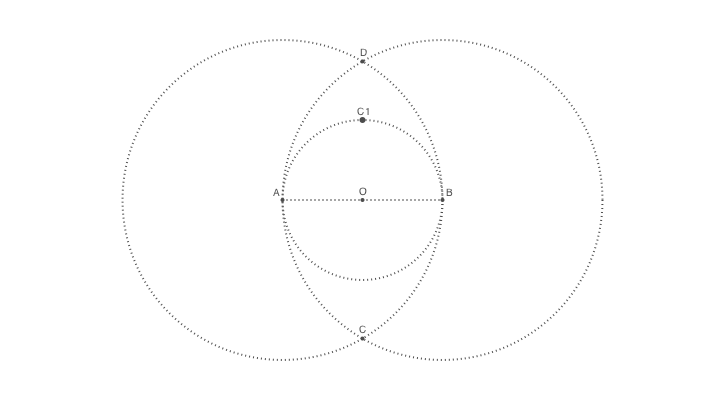
The two other points that define this circle lie on the intersections of lines from points A and B passing through the centerpoint C1.
The examples are getting long and repetitive, so add the following text to your previous code:
# @png begin
# ... as before
# Add this:
# finding the two other points on the circumference
nints, I3, I4 = intersection_line_circle(A, C1, A, 2radius)
nints, I1, I2 = intersection_line_circle(B, C1, B, 2radius)
circle.([I1, I2, I3, I4], 2, :fill)
if norm(C1, I1) < norm(C1, I2)
ip1 = I1
else
ip1 = I2
end
if norm(C1, I3) < norm(C1, I4)
ip2 = I3
else
ip2 = I4
end
label("ip1", :N, ip1)
label("ip2", :N, ip2)
circle(C1, norm(C1, ip1), :stroke)
# end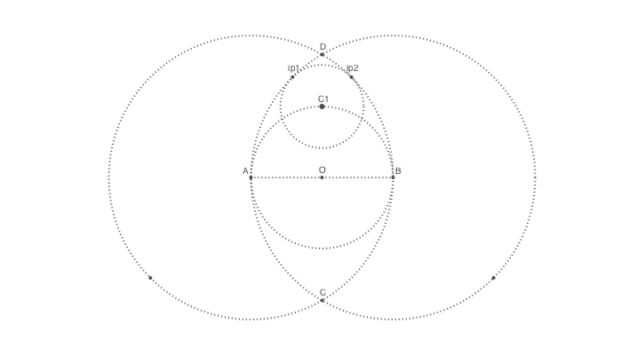
The task is a bit fiddly, because there are two intersection points but we want just the top one. The norm() function returns the distance between two points, and it's simple enough to compare the distances.
Eggs at the ready
We now know all the points on the egg's perimeter, and the centers of the circular arcs. To draw the outline, we'll use the arc2r() function four times. The function takes a center point and two points on a circular arc, plus an action.
The shape consists of four curves, so we'll use the :path action. Instead of immediately drawing the shape, like the :stroke action would, this action adds a section to the current path (which is initially empty). Only once we've added all four sections do we stroke and fill. If you want to both fill and stroke a path, using separate styles for each, you can use a 'preserve' version of the first instruction. This applies the action but keeps the path around for further actions.
@png begin
# ... as before
# Add this:
setline(5)
setdash("solid")
arc2r(B, A, ip1, :path)
arc2r(C1, ip1, ip2, :path)
arc2r(A, ip2, B, :path)
arc2r(O, B, A, :path)
strokepreserve()
setopacity(0.8)
sethue("ivory")
fillpath()
end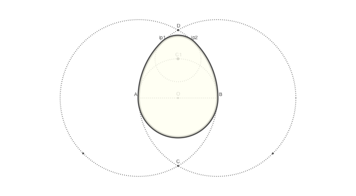
Egg stroke
To be more generally useful, the above code should be boiled into a function.
function egg(radius, action=:none)
A, B = [Point(x, 0) for x in [-radius, radius]]
nints, C, D =
intersection_line_circle(Point(0, -2radius), Point(0, 2radius), A, 2radius)
flag, C1 = intersection_line_circle(C, D, O, radius)
nints, I3, I4 = intersection_line_circle(A, C1, A, 2radius)
nints, I1, I2 = intersection_line_circle(B, C1, B, 2radius)
if norm(C1, I1) < norm(C1, I2)
ip1 = I1
else
ip1 = I2
end
if norm(C1, I3) < norm(C1, I4)
ip2 = I3
else
ip2 = I4
end
arc2r(B, A, ip1, :path)
arc2r(C1, ip1, ip2, :path)
arc2r(A, ip2, B, :path)
arc2r(O, B, A, :path)
closepath()
do_action(action)
endThis keeps all the intermediate code and calculations safely hidden away, and it's now possible to draw a Euclidean egg by calling egg(r, :stroke), for example, where r is the required radius, and :stroke is one of the available actions.
(Of course, there's no error checking. This should be fixed if the function is to be used for any serious applications...!)
Notice that, when called, the function inherits a lot of the current drawing environment: scale, rotation, position, line thickness, color, style, and so on. This lets us write code like this:
@png begin
for theta in range(0, pi/6, 12)
@layer begin
rotate(theta)
translate(0, -150)
randomhue()
egg(50, :fill)
end
end
end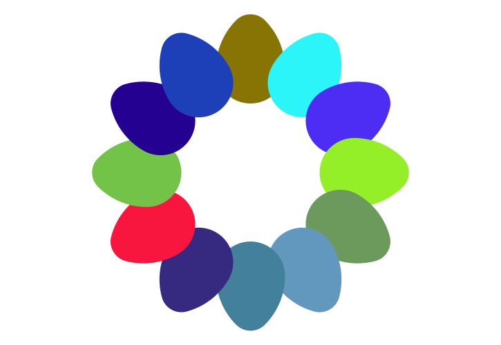
The loop runs 12 times, with theta increasing from 0 upwards in steps of pi/6. But before each egg is drawn, the entire drawing environment is rotated to theta radians and then shifted 'upwards' in the y direction by 150 units ('upwards' because normally the y-axis increases down the drawing; and that's in quotes because when theta is π, the direction looks like it's downwards). The randomhue() function does what it says, and the egg() function is passed the :fill action and the radius.
Notice that the four drawing instructions are encased in a @layer begin...end 'shell'. Any change made to the drawing environment inside this shell is discarded after each end. This allows us to make temporary changes to scale, orientation, etc. and discard them easily once the shapes have been placed.
You can tell which egg was drawn first — it's overlapped on each side by subsequent eggs.
Rotations and angles are typically specified in radians. The positive x-axis (a line from the origin increasing in x) starts off heading due east from the origin, and positive angles are clockwise. So the second egg in the previous example was drawn after the axes were rotatated pi/6 radians clockwise.
As well as stroke and fill actions, you can use the path as a clipping region (:clip), or as the basis for more shape shifting.
Polyeggs
The egg() function creates a path and lets you apply an action to it. It's also possible to convert the path into a polygon (an array of points), which lets you do more things with it. The following code converts the egg's path into a polygon, and then moves every other point of the polygon halfway towards the centroid.
@png begin
egg(160, :path)
pgon = first(pathtopoly())
pc = polycentroid(pgon)
circle(pc, 5, :fill)
for pt in 1:2:length(pgon)
pgon[pt] = between(pc, pgon[pt], 0.5)
end
poly(pgon, :stroke)
end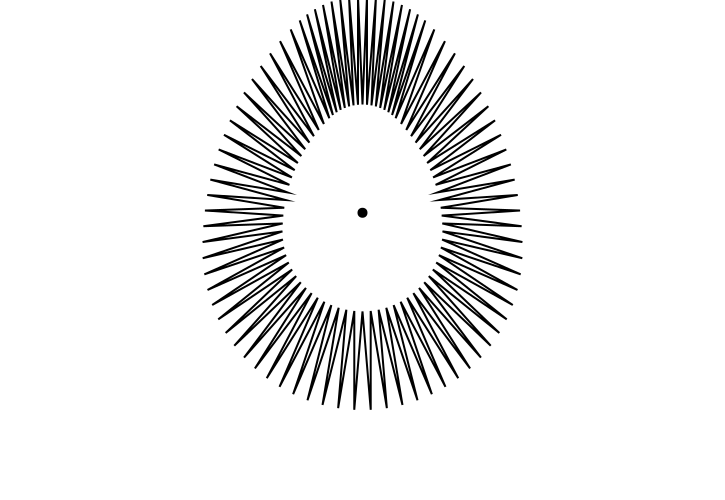
The pathtopoly() function converts the current path made by egg(160, :path) into a polygon. Those smooth curves have been approximated by a series of straight line segments. The first() function is used because pathtopoly() returns an array of polygons (paths can consist of a series of loops), and we need only the single path here.
polycentroid() finds the centroid of the poly. The loop steps through the points and moves every odd-numbered one towards the centroid, between() finding a point midway between two specified points. The poly() function draws an array of points.
For a final experiment, here's the offsetpoly() function struggling to draw around the spiky egg-based polygon created by the previous code.
@png begin
egg(80, :path)
pgon = first(pathtopoly())
pc = polycentroid(pgon)
circle(pc, 5, :fill)
for pt in 1:2:length(pgon)
pgon[pt] = between(pc, pgon[pt], 0.8)
end
for i in 30:-3:-15
randomhue()
op = offsetpoly(pgon, i)
poly(op, :stroke, close=true)
end
end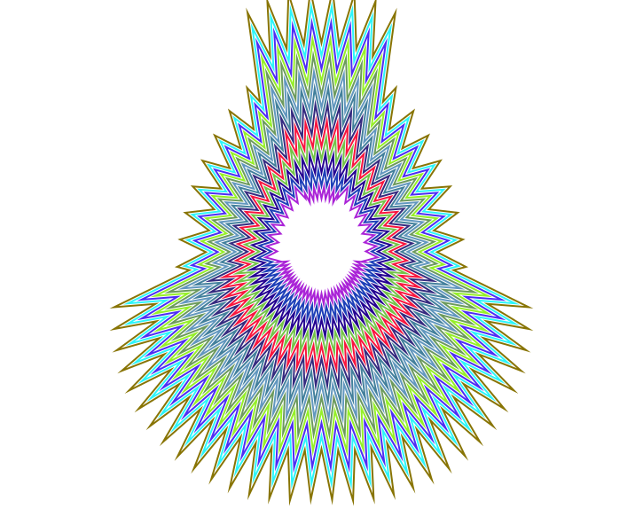